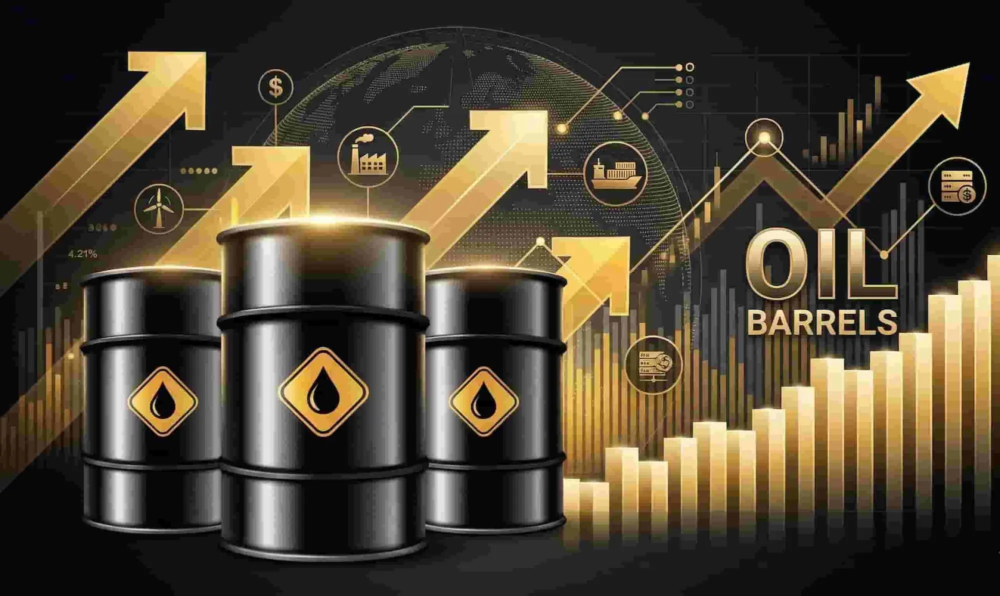
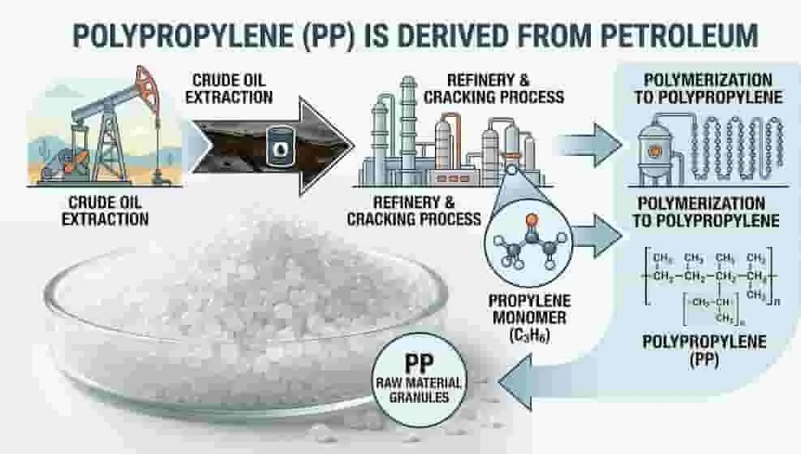
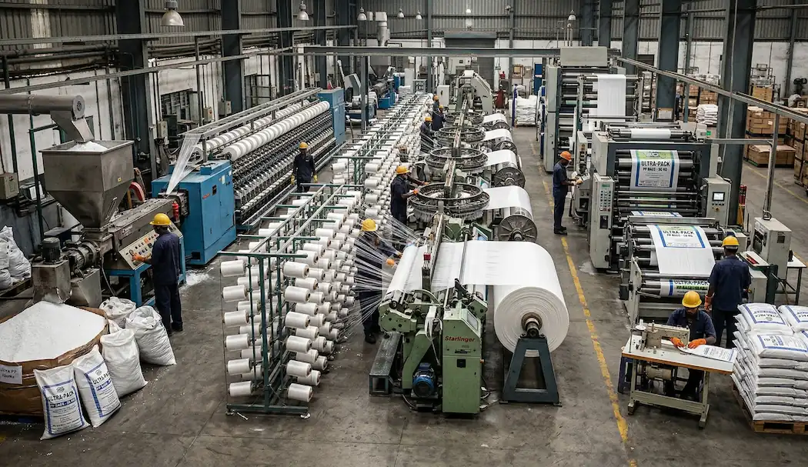

Crude Oil Price Impact on PP Bags Industry in Morbi

Crude oil price increase directly affects polypropylene raw material cost
In 2026, global conflicts and supply chain disruptions are impacting industries across India, especially the polypropylene (PP) packaging sector in Morbi.
Buyers are experiencing price fluctuations, delayed deliveries and raw material uncertainty. This article explains the situation in simple terms.
Why Crude Oil Price Affects PP Bags?
Polypropylene (PP) is derived from petroleum. Because of this:
- Increase in crude oil price leads to higher PP raw material cost
- Supply instability creates unpredictable manufacturing costs
PP bag pricing is directly linked to global oil markets.

War Situation and Supply Chain Impact
Global tensions and shipping route disruptions are causing:
- Increase in freight costs
- Delays in shipments
- Raw material shortages
This has a direct impact on manufacturing hubs like Morbi in Gujarat.

Impact on Packaging Industry in Morbi
- Increase in PP granule prices
- Frequent changes in bag pricing
- Longer delivery timelines
- Higher pressure on manufacturers

What This Means for Buyers
- Prices may increase further
- Delays in supply are possible
- Late ordering may increase cost
Recommendation for Buyers
If your requirement is confirmed, placing orders early can help secure better pricing and timely delivery.
Calculate Your Bag Cost
Use our calculator tool to estimate bag weight and cost based on current market conditions.
Calculate Bag PriceContact for Latest Price
For updated pricing and supply availability, contact us directly.
Contact on WhatsAppConclusion
Understanding market changes helps businesses make better purchasing decisions. Staying updated with raw material trends is important in the current scenario.